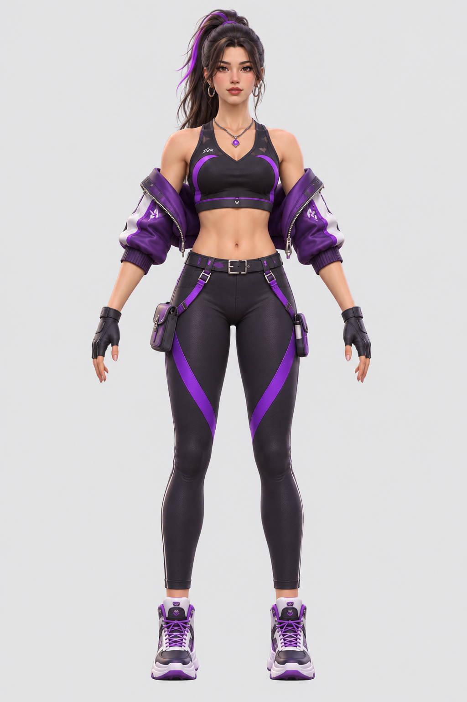
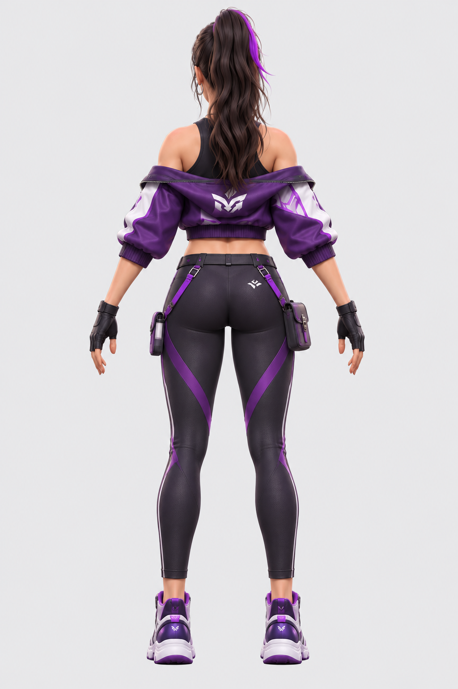
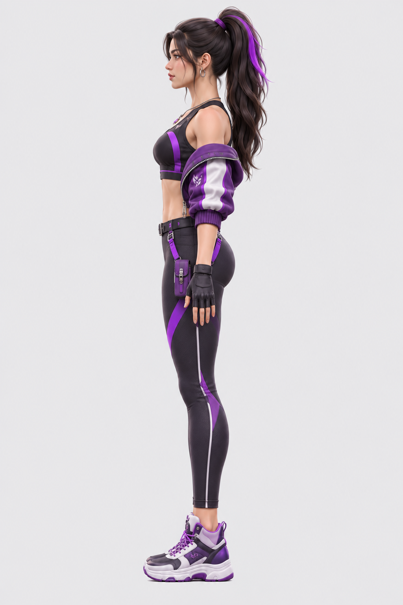
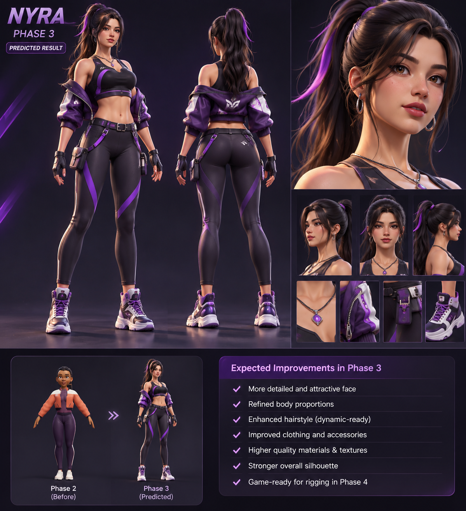

The user-supplied board is the authority. The four views below are generated 2D derivatives for review, not Blender renders or proof of a finished character.




Stop: approval is required before model downloads or 3D generation. Existing Phase 2 and interrupted Phase 3 work is preserved.